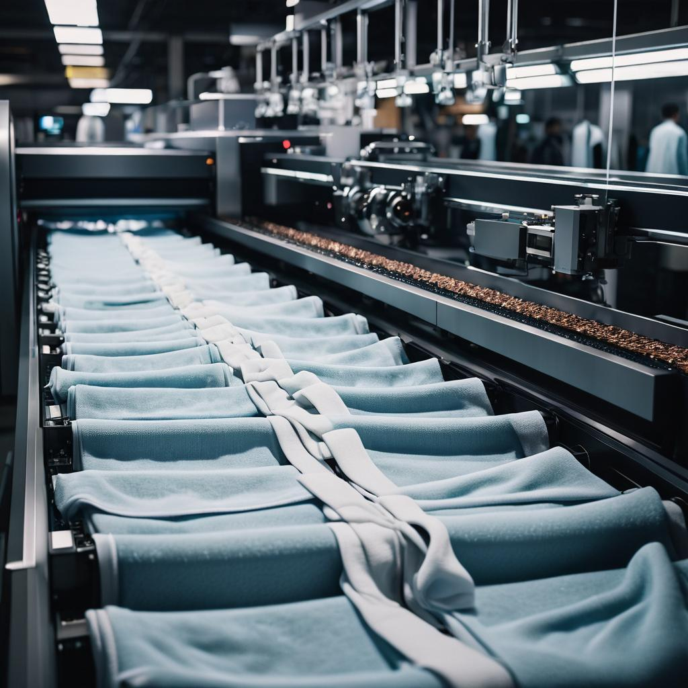

What are we solving?

- Challenges in Quality Control: Companies and charities encounter obstacles in making sure that the quality of the donated clothing is guaranteed. This can raise worries regarding the appropriateness of items for distribution or utilization.
- Logistical Complexities: Handling the collection, sorting, and distribution of clothing donations can be quite demanding in terms of logistics and resources, especially for operations on a large scale.
- Limited Resources: Organizations may struggle due to limited resources, such as manpower and funding, when managing textile recycling and redistribution efforts.
- Sustainability Pressures: As society pushes for sustainability, organizations must show their commitment to the environment by improving how they dispose of and donate clothing.
- Risk of Reputation Damage: Poor handling of clothing donations or improper disposal could harm the reputation of companies, charities, and institutions, especially if they're not seen as socially or environmentally responsible.